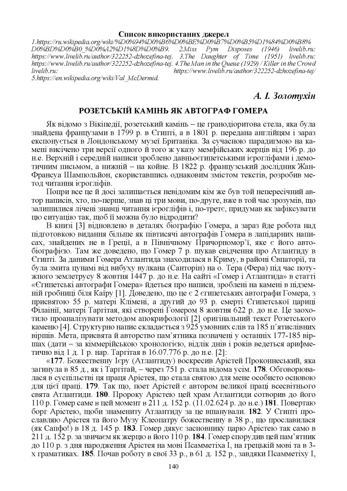
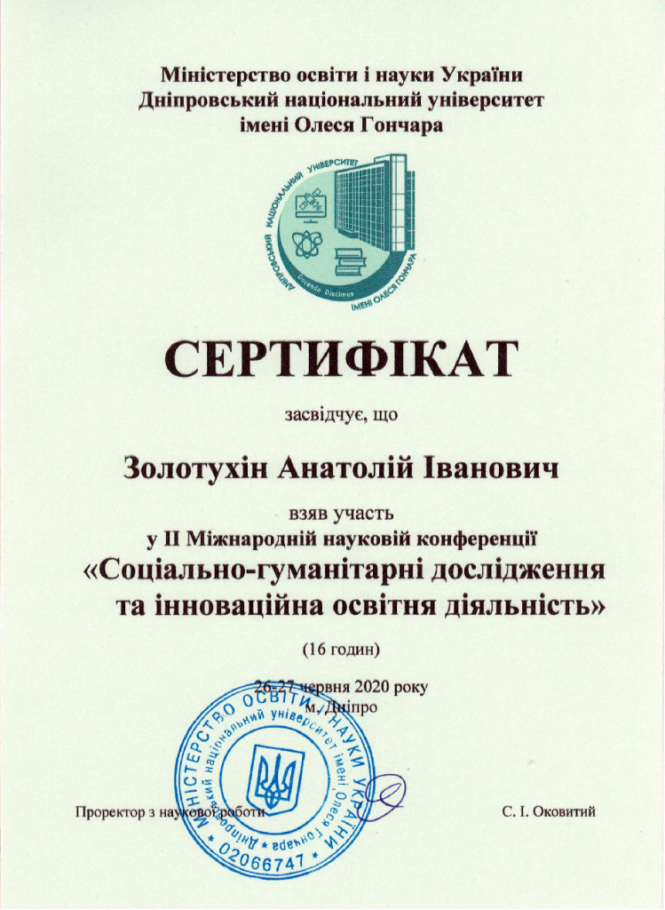
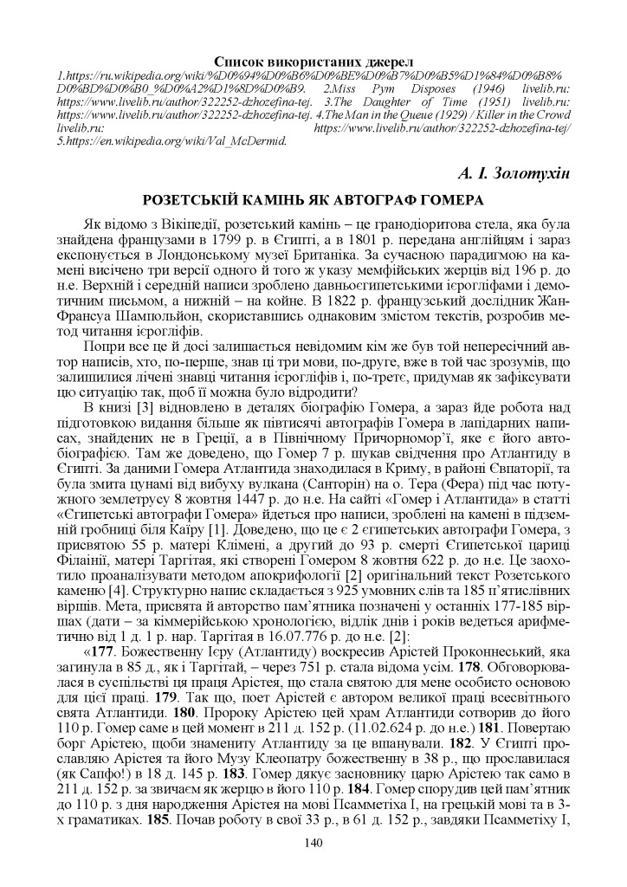
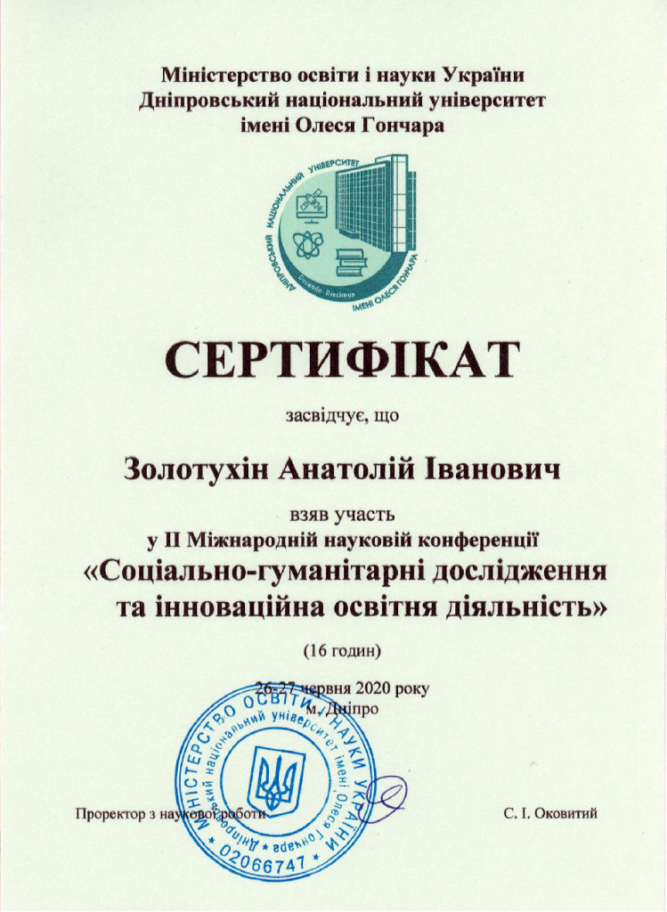

Доповідь на ІІ Міжнародної наукової конференції 26-27 червня 2020 р.

Як відомо з Вікіпедії розетський камінь – це гранодіоритова стела, яка була знайдена французами в 1799 р. в Єгипті, а в 1801 р. передана англійцям і зараз експонується в Лондонському музеї Британіка. За сучасною парадигмою на камені висічено три версії одного й того ж указу мемфійських жерців від 196 р. до н.е. Верхній і середній написи зроблено давньоєгипетськими ієрогліфами і демотичним письмом, а нижній – на койне. В 1822 р. французський дослідник Жан-Франсуа Шампольйон, скориставшись однаковим змістом текстів, розробив метод читання ієрогліфів.
Попри все це й досі залишається невідомим кім же був той непересічний автор написів, хто, по-перше, знав ці три мови, по-друге, вже в той час зрозумів, що залишилися лічені знавці читання ієрогліфів і, по-третє, придумав як зафіксувати цю ситуацію так, щоб її можна було відродити?
В книзі [3] відновлено в деталях біографію Гомера, а зараз йде робота над підготовкою видання більше як півтисячі автографів Гомера в лапідарних написах, знайдених не в Греції, а в Північному Причорномор’ї, яке є його автобіографією. Там же доведено, що Гомер 7 р. шукав свідчення про Атлантиду в Єгипті. За даними Гомера Атлантида знаходилася в Криму, в районі Євпаторії, та була змита цунамі від вибуху вулкана (Санторін) на о. Тера (Фера) під час потужного землетрусу 8 жовтня 1447 р. до н.е. На сайті «Гомер і Атлантида» в статті «Єгипетські автографи Гомера» йдеться про написи, зроблені на камені в підземній гробниці біля Каїру [1]. Доведено, що це є 2 єгипетських автографи Гомера, з присвятою 55 р. матері Клімені, а другий до 93 р. смерті Єгипетської цариці Філаінії, матері Таргітая, які створені Гомером 8 жовтня 622 р. до н.е. Це заохотило проаналізувати методом апокрифології [2] оригінальний текст Розетського каменю [4]. Структурно напис складається з 925 умовних слів та 185 п’ятислівних віршів. Мета, присвята й авторство пам’ятника позначені у останніх 177-185 віршах (дати – за кіммерійською хронологією, відлік днів і років ведеться арифметично від 1 д. 1 р. нар. Таргітая в 16.07.776 р. до н.е. [2]:
«177. Божественну Ієру (Атлантиду) воскресив Арістей Проконнеський, яка загинула в 85 д., як і Таргітай, – через 751 р. стала відома усім. 178. Обговорювалася в суспільстві ця праця Арістея, що стала святою для мене особисто основою для цієї праці. 179. Так що, поет Арістей є автором великої праці всесвітнього свята Атлантиди. 180. Пророку Арістею цей храм Атлантиди сотворив до його 110 р. Гомер саме в цей момент в 211 д. 152 р. (11.02.624 р. до н.е.) 181. Повертаю борг Арістею, щоби знамениту Атлантиду за це вшанували. 182. У Єгипті прославляю Арістея та його Музу Клеопатру божественну в 38 р., що прославилася (як Сапфо!) в 18 д. 145 р. 183. Гомер дякує засновнику царю Арістею так само в 211 д. 152 р. за звичаєм як жерцю в його 110 р. 184. Гомер спорудив цей пам’ятник до 110 р. з дня народження Арістея на мові Псамметіха І, на грецькій мові та в 3-х граматиках. 185. Почав роботу в свої 33 р., в 61 д. 152 р., завдяки Псамметіху І, завершив в 210 д. 152 р., при підтримці всі 148 днів Псамметіха І, дякую йому за можливість працювати радісно до знемоги, Гомер».
Порівняно з текстами Гомера, написаними під псевдонімом Платона, в Діалогах «Тімей» і «Критій» тут надані нові свідчення (вперше позначено у вірші 26, що Атлантида проіснувала 1123 р.!) та є й повтори в описі самого міста. Але важливість цього пам’ятника полягає в тому, що він знайдений в Єгипті – це матеріальне підтвердження 7 р. перебування Гомера в Єгипті, спрямоване на пошуки свідчень про Атлантиду, яким сприяв Псамметіх І. Крім того, тут надані унікальні свідчення про життя роду Таргітая. Ось як Гомер пише про те, як 20 р. Таргітай їздив свататися за його майбутньою дружиною, Клеобуліною, до батька Зороастра: «165. Великий жах відчув Таргітай перед багатолюдним шляхетним верховним владикою Зороастром землі в малому місті Іс (передмістя Вавілону – А.З.). 166. Вистояв 6 днів і з Клеобуліною святкував одруження в 37 д. 20 р. 167. Пророку Зороастру Таргітай відкрив свідчення в 35 д. 20 р. про корабельну Атлантиду, яка існувала 691 р. тому. 168. Домовився Таргітай з матір’ю Бусою й батьком Кадмом (фінікійськи царі – А.З.) теж. 169. Наговорив Таргітай компліментів батькам знайомим раніше безпосередньо (разом складали грецьку абетку – А.З.)». 23.09.756 р. до н.е. моряк і кіммерійський цар Таргітай привіз Клеобуліну до дому й влаштував весілля, а 7.08.753 р. до н.е. побудував тут 3 міста: Ольвію-1, Борей та Нісон (м. Миколаїв).
Недавно вдалося з’ясувати, що батько Таргітая, кіммерійський цар Гастій, жив в районі Каппадокії й був одружений на єгипетській цариці Філаінії. [1] З трьома дітьми, вони прибули на миколаївську землю, як на землю своїх предків атлантів, і в 1-й день тут народився Таргітай, а через 85 д. Гастій загинув. Філаінія померла в в 85 д. 61 р. (8.10.715 р. до н.е.). Вона встигла за цей час навчити мовам своїх 4-х дітей, його доньку Сфено нар. в 749 р. до н.е. та її сина, Арістея Проконнеського, нар. в 734 р. до н.е. Арістей навчив Гомера під час його вигнанні в 645-640 рр. до н.е. Так що, Псамметіх І сприяв пошукам Гомера свідчень про Атлантиду в Єгипті як родичу.
Список використаних джерел
- Золотухін А.І. Сайт «Гомер і Атлантида», Єгипетські автографи Гомера: http://homerandatlantis.com.
- Золотухін А.І. Коротко про нову науку апокрифологію, ДНУ, Матеріали ІІ Міжнародної наукової конференції, 27-28 березня 2020 р. Ч.ІІ, 141-143 сс.
- Золотухін А.І. Україна – душа і серце Європи! (Апокрифологія історії України), Миколаїв, 2018, 444 с.
- Юзяк М.М., Дніпро, 2010 р.: https://mishawalk.blogspot.com/2014/12/blog-post_66.html
 


{kind=link}
{kind=link}
{kind=link}
{kind=link}
{kind=link}